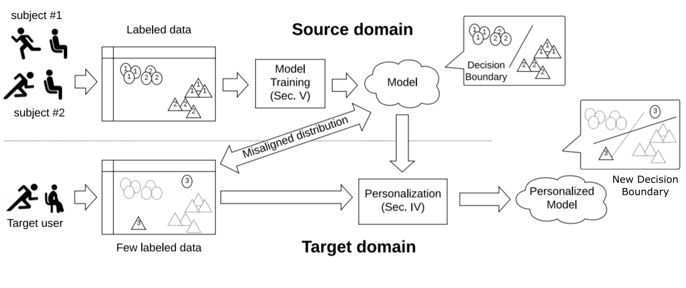
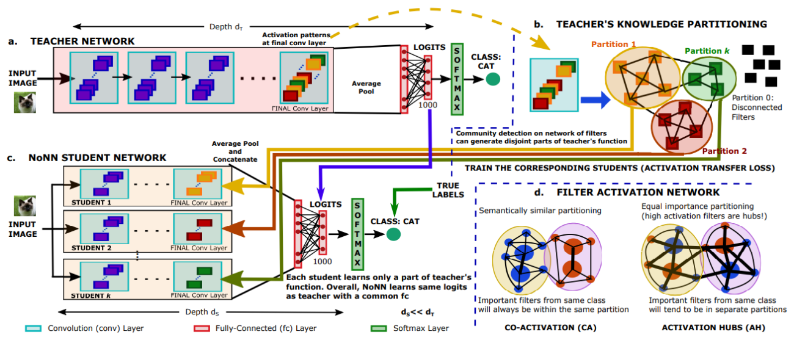
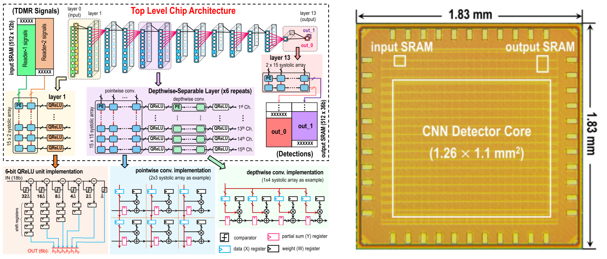

Training for low-precision ML inference
My research focuses on training for low-precision ML inference. My recent works build a low-bit systolic array. On the hardware side, the low-bit arithmatic costs less energy from fewer logics and increases operational intensity. On the software side, the conventional quantized training is modified to fit low-bit integer arithmatic in the hardware. Combining the effort from both hardware and training, the power efficiency from a 16nm FPGA is 4.5x better than the same-technology GPUs.
Cell culture assay
My research targets multimodal cell culture assay, especially cell image analysis. One aim of my thesis is to analyze cell status through visual and non-visual data. Our group has several publications using non-visual sensor data to achieve cell culture assay. And there are some preliminary results modeling cell tracking as an object detection problem.
ML-based Signal Processing
Not Deep Learning! My research also aims to employ machine learning in the real world. This includes algorithm part and implementation part. The algorithm part addresses the distribution shift between different domain, and the implementation part develop a hardware-friendly algorithm based on distributed inference or quantization. My specific focus targets the model with moderate number of parameters instead of an overparameterized model, and interested in the theoretical part of machine learning.- TA of 18-661 Intro to ML for Engineers (Fall 2021)
- Model personalization for human activity recognition

- Memory-and communication-aware model compression for distributed deep learning inference on IoT

- Non-Linear CNN-Based Read Channel for Hard Disk Drive With 30% Error Rate Reduction and Sequential 200-Mbits/s Throughput in 28-nm CMOS
- ASIC Implementation of Non-linear CNN-based Data Detector for TDMR System in 28nm CMOS at 200Mbits/s Throughput
- Non-linear CNN-based Read Channel for Hard Disk Drive with 30% Error Rate Reduction and Sequential 200Mbits/second Throughput in 28nm CMOS
